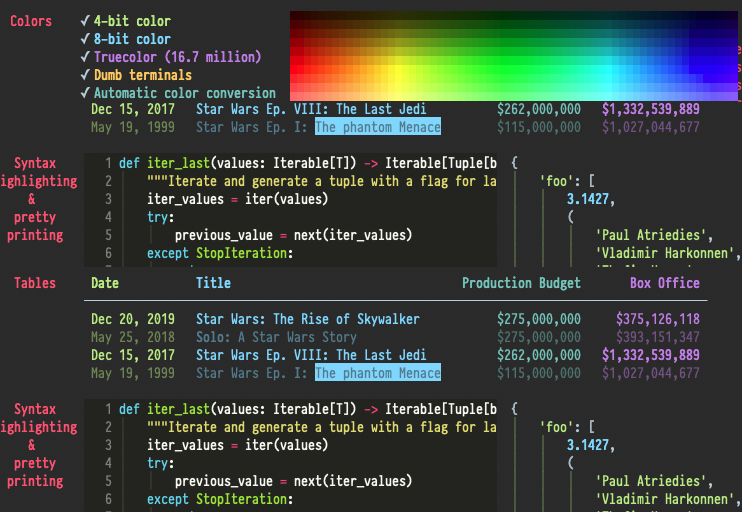

Which categories do you want to see?
Keyboard Shortcuts:
?toggle shortcut descriptions/ searchj scroll downk scroll uptt toggle dark themegi go to blog index pagegn go to next articlegp go to previous articlegf go forwardsgb go to previous pagegc go to categories pagego go to article's category pagega go to about pagege go to experience pagegr go to portfolio pagegk go to books pagegm go to analytics (metrics) pagegs go to snippets pagegl go to landing pagevt only show technical articles on blog index pagevn only show non-technical articles on blog index pageva show articles from all categories on blog index pageSnippets are super brief notes for my own use. I'd hoped that Twitter would be a convenient place to store tiny notes, but its not searchable enough. This page should allow quick browsing and searching for things I know I knew or saw in the past.
June
“I have learnt that failure is my greatest teacher”
- Georges St-Pierre
Contains too much conjecture at the start, but becomes more substantial.
At high levels of competition the difference between “good” and “great” is partly determined by how much pain you are willing to experience.
There are great benefits from training in a secondary discipline.
- Anderson Silva is a ballet dancer.
- Conor McGregor does “movement training”.
- Israel Adesanya dances competitively.
- Georges St-Pierre practices gymnastics.
Rabbits, fluid convection, the Mandelbrot set and lots of others things too. Also known as bifurcation theory.
The video shows how the Feigenbaum Constant is defined. It’s a fundamental constant I hadn’t come across before - 4.6692..
“An Apple onion router. The routing uses two hops; Apple provides the first, and independent third parties (not yet specified) provide the second.”
“In one move, Apple has taken onion routing from a specialized tool for hackers to something that will be in daily use.”

python -m rich for a demo
{kind=link}
Cool Python module to handle terminal output with debugging and logging features. It can even record stack trace errors to html.
An amateur practices until they can play it correctly, a professional practices until they can’t play it incorrectly.
- Invoked with
sfollowed by 2 chars. Sgoes backwards.F,f,T, andtare enabled to work across lines.- Jump back with
<C-O> ;or,to go to next/previous highlighted text.5sxysearches for the next instance ofxywithin 5 lines.3dzqtdelete up to the third instance ofqt.
A basic statement that is assumed to be true. E.g: “A straight line can be drawn between any two points”
Hedgehogs know one big thing, Foxes know many things.
A classification system or mental model for writers and thinkers.
Key commands
git lfs install(also uninstall)git lfs track "**/*.mp4"git lfs ls-filesgit lfs status
track just updates the .gitattributes file.
Commit the .gitattributes file with the tracking configuration before committing the large files.
status or ls-files should show the large files in question
before you push the commit that starts tracking the large files.
Blog post demonstrating how to split a
.bashrc file into “submodules” and keep it maintainable.
BASHRC_D=~/.config/bashrc.d
[[ -r ${BASHRC_D}/bootstrap ]] && . ${BASHRC_D}/bootstrap
for file in ${BASHRC_D}/*.sh; do
[[ -r $file ]] && . $file
done
unset file
An essay called A project of ones own by Paul Graham.
- being pushed into a task vs being pulled
- skating vs walking
May
[sor]s→ go to next/previous bad wordz=→ list of suggestionszg→ add word to good word listzug→ remove word from good word listzw→ add word to bad word listzuw→ remove word from bad word list
grep -inr --include package.json \
'shortcut": {' . -A 3
- It’s the
--includeflag that does the important part. -i→ case insensitive-n→ print line number-r→ recursive from starting page.→ start in current directory-A 3→ print the 3 lines below the found line
:map → show a list of the current keyboard mappings for normal, visual, select and operator pending modes.
:map! → show a list of the current keyboard mappings for insert and command-line mode
Top put all the mappings into a convenient text file:
:redir! > vim_maps.txt
:map
:map!
:redir END
This blog post arrives at the conclusion that the only way to take good paper notes is to organise them chronologically, and only summarise the content once the notebook is full.
Keep it simple, trust your intuitions.
simple → robust → reliable
Also, it links to zettelkasten.de/the-archive
“Without training, they lacked knowledge. Without knowledge, they lacked confidence. Without confidence, they lacked victory.”
- Julius Caesar
I know about ImprovMX, which used to be great because you could do a lot for free, but now you only get 1 domain for free.
ForwardEmail are 3 times cheaper than ImprovMX, and I have 2 domains forwarding email. It’s not particularly private, but I can send and recieve from a domain, for free.
A snippet
detailing how to use nested auto commands to apply custom modifications when a
colorscheme is loaded. Perhaps this will stop me :e-ing so frequently.
A useful collection of gists by Romain Lafourcade
A gist about netrw.
See where an option was set in vim using the following command:
:verbose set textwidth?
????→ 4 chars*→ any number of chars[:upper:]⇔[A-Z]same for[:lower:]and[:digit:][:alpha:]⇔[a-zA-Z]-
[:alnum:]⇔[a-zA-Z0-9] -
ls -l [a-d]→ part of a range - ^ and $ works like in regex
la a*.{doc,docx}→ ORls a*.(doc|docx)→ OR
Create a custom command and function to create a new file in vim.
command! -nargs=1 Ms call s:NewFile(<q-args>)`
function! s:NewFile(fp)
echom a:fp
execute "e " . "~/foo/bar/" . a:fp . ".ext"
endfunction
Useful help:
:h %:h→ filename modifiers:h expand()→ expand wildcards, including filename modifiers
- target function arguments
- more types of object
- consistent searching/jumping if you’re not inside the thing you’re targeting
- jump forward or backward
- look for the nth occurrence
- select white space around/inside object
<C-h>- same as backspace<C-w>- delete previous word<C-u>- delete everything before cursor (on same row)<C-d>or<C-t>- (un)indent a row<C-e>- delete next word (create a mapping in vimrc)
If you want to alias a bunch of arguments for a command, use global aliases:
alias -g foo="some complicated options"
grep some complicated options
becomes: grep foo
It’s annoying when you delete something and overwrite your yanked text.
Use numbered registers!
"0 to "9
"0 contains the most recent yank.
"1 contains the most recent deleted text
"0p - paste the most recent yank, even if you deleted something after yanking it
Chezmoi is a great tool for managing dotfiles. This is a shortcut to update the source state based on local changes.
chezmoi status | cut -c 4- | xargs -I % -p sh -c 'chezmoi add ~/%'
“It enhances your memory and makes you more creative. It makes you look more attractive. It keeps you slim and lowers food cravings. It protects you from cancer and dementia. It wards off colds and the flu. It lowers your risk of heart attacks and stroke, not to mention diabetes. You’ll even feel happier, less depressed, and less anxious.”
Why We Sleep by Dr. Matt Walker
How to write robust bash scripts:
An often recommended blog post by Kaleigh Moore about writing a good about page.
- https://namecheap.com (cheap)
- https://instantdomainsearch.com (variants)
- https://iwantmyname.com (tld comparison)
/etc (etsy) → “etcetera” or “editable text config” → a place to put config files.
Originally, the root directory had /boot for booting, /dev for devices… One dir for each type of thing. But this put config in many places. so etc/ became convention
April
Blog post about browser/Web-app security, including:
- CSRF
- CORS
- HTTP Security Headers
From an Interview:
I don’t want to claim that programming is an art, because it really is mostly just about ‘good engineering’. I’m a big believer in Thomas Edison’s ‘one percent inspiration and ninety-nine percent perspiration’ mantra. It’s almost all about the little details and the everyday grunt-work.
But there is that occasional ‘inspiration’ part, that ‘good taste’ thing that is about more than just solving some problem - solving it cleanly and nicely and yes, even beautifully.
A RPC is when an executable causes a procedure (subroutine) to execute on another computer, It’s coded as if it were a normal (local) subroutine. You don’t explicitly code the details for the remote interaction. You write the same code whether the subroutine is local or remote.
Just found a really useful blog
Interesting discussion about the difference between builtins and executables,
Nice examples of using fzf to improve workflows.
lsblk is a command to get info about connected devices.
Used when attaching drives.
A console based file manager with vi key bindings.
Install it with brew install ranger
Launch it with ranger
This is a great article about using regular expressions in Vim:
where <executable>
See a list of all builtin commands
man where
Make aliased files the real file
for f in $(find . -type l -maxdepth 1);
do cp --remove-destination $(readlink $f) $f;
done;
swap-window -s 3 -t 1
Save (write) a (read only) Vim file with sudo when you opened it without sudo-ing:
:w !sudo tee %
The trouble with climbing higher is that eventually you lose sight of the ground.
Broot is a tool that shows the contents of a directory on one screen, even its got lots of files or sub-directories.
I should see if I can use GitHub actions to generate html from markdown and run some shell and python scripts.
There is a similar tool, with a list of other similar tools here
An example of a safe, good, robust bash file skeleton.
I was running a binary in Debian that was complaining about an environment variable not existing. I moved the binary into a $PATH directory and logged in as a sudo user. Why did this solve the problem?
As a hacker, or creator, or whatever the best label is, I always want to create something (usually code) and have it finished.
But a strange creativity and productivity boost comes from dabbling, dipping in and out.
I think that if the technical challenges aren’t too hard, then the main criteria for success is creativity.
Creativity needs time away from the project, and sleep, to bubble up and let ideas grow.
Ultimately, the most successful path is usually the most interesting, because success has more consequences than failure. “Interesting” requires elements of novelty and surprise, and without creativity these elements can’t flourish. 3/n
Dabbling results in more creativity than 6+ hours of strenuous work, and is more likely to give you satisfying results.
bar << foo bar will stop reading input when it reached “foo”.
bar <<< "foo" foo is all the input. bar wont run interactively.
bar < <(foo:list) process subscription. Kind of like piping in the output of multiple commands.
March
console.info(`${JSON.stringify(foo, null, 2)}`);
analystsnow.com looks like a really useful business.
Frantic distraction via productive procrastination is exhausting, and useful.
<C-w>x - swap buffers, but keep arrangement the same
<C-w>H - make the current split cover the left of the screen.
J, K, L covers the bottom, top, right of the screen
A guide about writing plugins for Pelican.
Thanks @geographeur
I tried to read and write the same file in a pipeline, and got caught out by a race condition (why is the file empty?!). Do this instead:
some_script < file > smscrpt.$$ \
&& mv smscrpt.$$ file || rm smscrpt.$$
|| removes the temporary file if it errors.
$$ is the process ID and ensures that you always have a unique temporary
file name.
jj - A stream editor
jq - A json processor
python -m json.tool
I like jq for pretty printing JSON output, jj for making JSON pretty or condensed.
This was really useful when optimizing the search index for this blog.
docker run -d ...
docker logs -f <ID>
docker run -it ...
docker run -itd
docker container attach <ID>
<C-p><C-q> -> detach from container interactively
Probably it’s one you just curl-ed
curl -sSfL https://example.com/install.sh | sh -s
Split long strings (or command outputs) onto multiple lines
Find and replace a particular char (maybe :) with a \n.
... | tr ':' '\n'
... | sed 's/:/\n/g'
- Without noticing, create a .gitignore file with a single * in it.
- Spend a day trying to understand why ripgrep has stopped working for only 1 project.
- 😭😭😭
Teaching my kids about money and work is having an effect.
Yesterday, my daughter made a painting for me and asked my to buy it using pretend money.
sudo groupadd docker -> make the group
sudo gpasswd -a $USER docker -> add $USER to the docker group
newgrp docker -> activate the changes
If you’re cat-ing a file and the bash prompt doesn’t start on a new line (cos
the file you displayed using cat doesn’t end with a new line char) the
following will fix it:
cat <filename> ; echo
adduser -m <username>
usermod -aG sudo <username>
CentOS:
adduser -m <username>
passwd <username>
usermod -aG wheel <username>
(wheel is a usergroup with sudo permissions)
df -h
Show disk space
du -hs .
See how big the current dir is
Cloning large repos, or repos with large files in them, doesn’t work with git
clone ... you need to use git lfs clone ...
So why is git lfs clone deprecated? What’s the replacement?
Use nohup to keep a curl process running even when the terminal (tty?) session autocloses at 3am.
You can group shells into groups:
ksh- korn shell and zshellsh- bourne shell and bash (the bourne again shell)
Because
zshisn’t a superset of bash.bashis a superset of the bourne shell.
Its more socially acceptable to make mistakes and errors of omission than commission.